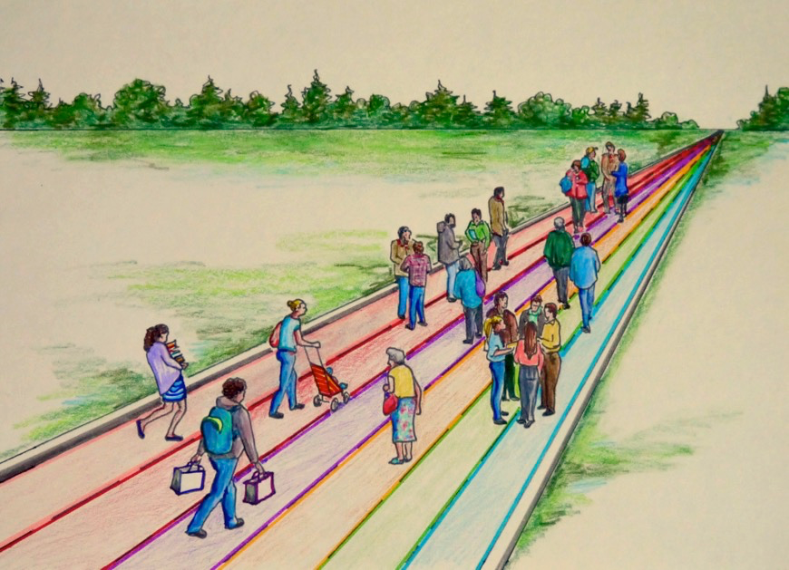

Education 20/20 Inc.
Mandate: To contribute to the education of our citizens by providing information, encouragement and support for a quality education for all citizens.
Activities:
Bilingual monthly onic newsletter
Website
Occasional papers
Workshops
Directors:
Don Glendenning, President
Bill Whelan, Vice President
Alice Taylor, Secretary
Tanya Craig, Treasurer
Tim McRoberts
Tom White-Hassler
Maureen Kerr
Katherine McQuaid
Amber Jadis
Anne Miller
Donald desRoches

Common
Educational
Terms
A quality education for every Canadian
CALL FOR ACTION
Develop a “clear and compelling” vision of education for all Islanders. Although much has been written about education, a comprehensive vision statement does not currently exist for PEI. We believe that having such a statement is required, especially for a service as large and complex as education, however, we are not suggesting another study but rather a document prepared by a small working with opportunity for citizen input.
Develop a learner centered service model that provides support in all domains to learners as, when and where needed. Doing so would involve student centered outcomes, criterion referenced assessment, flexible scheduling, challenge for credit arrangements, and greater autonomy and accountability for teachers.
Assume a leadership role in creating a learning culture and providing a quality education for every Islander. Government should focus on matters of planning, setting priorities, funding, monitoring, and quality control, ensuring the availability of professional resources, home support for preschool children, information and continuing education.
Delegate the role of providing instruction. The actual provision of instruction should be expanded beyond schools, colleges, universities to include community agencies, professionals in private practice and learners themselves.
Establish a qualification body for the purpose certifying individual levels of achievement to persons wanting or needing such documentation. The role of teachers is to help others learn; when teachers rank their students they are putting their ability to teach at risk. Assigning student grades, selecting students for prizes and awards and awarding diplomas and degrees is a sorting process and should not be part of a teacher’s role. Apprenticeship with certification through a Provincial Department of Labour and music through the Royal Canadian Music Conservatory are examples of the recommended arrangement.
Establish a professional model of service delivery where professionals are directly accountable to clients for the nature, extent and quality of service provided. Such a model must include a direct and close professional-client relationship, the potential for a family education adviser for those who want it, and professional autonomy and accountability for all.
Put in place a strategy to encourage and support innovation, such a strategy to include freedom to experiment, an innovation fund and an external decision-making committee.
ABOUT EDUCATION

The Road of Life is a framework for thinking about education; it starts with the view that one’s education is preparation for the next stage on the road of life. Having a framework for learning increases the chances of making relevant decisions and making those decisions more consistently. It also provides common language and perspectives when collaborating with colleagues in the field.
A learner, is an Islander who, for whatever reason, is trying to bring about change in his/her life, trying to change one’s attitude, gain new knowledge or add to one’s skills. But learners are neither empty jars nor blank slates; to each new learning situation, a learner brings:
• Certain physical, mental and emotional conditions
• Prior learning experience
• An imagined future
The road of life is a metaphor for the experiences one encounters between the day one is born and the day one dies; while on the road we encounter:
Life roles reflect the main themes that engage us as we travel, that of functioning as an individual, a family member, a citizen, a student, a consumer and producer.
Natural obstacles of time, age, personal and family responsibilities, geography, finance, which may even be compounded and compromised by those we meet along the way.
Regulations that allow or prohibit access by people with particular characteristics such as a qualification, an age level, physical characteristics, level of education, level of wealth, temperament or a credential.
Baggage we carry in the form of our culture, competencies, and our personal make up.
Testing - is an objective and standardized method for
Estimating the extent of achievement based on a sample of desirable
achievement
NOTE: The items in this glossary were gathered by many people over the years and from many sources. In sharing them with you, we acknowledge and thank all who did the same for us
GLOSSARY
Assessment - is a process of gathering information about a person’s performance on a task or
set of tasks for the purpose of initiating improvement.
Benchmark - is a level of performance which is widely recognized by practitioners and the
Public at large and which serves as the reference against which others are evaluated.
Competency Based Education (CBE) – a subset of outcomes focused at a learner’s level of
engagement
Certification - is a formal document which attests to the capabilities of the holder based upon
a selected sample of performance.
Competence - the ability to meet the performance requirements of an occupation, trade or
profession.
Competency - statement of observable behaviour resulting from the application of knowledge to the solution of a problem or situation
Criteria are indicators used to judge the extent or level of performance.
Degree – an academic title given by a college or university to a student who has completed a course of study
Diploma: a document issued by an educational institution indicating that the holder has
completed a program of studies offered by that institution.
Education - any experience that has a formative effect on the way a person thinks feels or acts.
Education system - services put in place by a community to encourage and support the education of its citizens
Education, purpose – to develop one’s capacities as participating member of a community or society
Evaluation –an overall judgement of what has been learned
Grade level –A single division of a school classified by the age of students
Instruct – furnish with information in a methodical way
Learner – a person who is in the process of changing behaviour
Learning - a process of engaging in experiences that have a formative effect on the way we feel, think and act
Occupation - competencies or related tasks grouped for the purpose of designating work roles.
Occupational standards - are levels of performance in an occupation or field set and recognized
By the field
Educational outcome - is a statement of performance which is expected to occur at a point in a persons
learning.
Outcome-based education –- is a student-centred, results-oriented, standards-referenced system premised on the belief that all individuals can learn. (Minnesota 1991 Education Omnibus Bill, 1991)
.Performance - the ability to apply knowledge and experience to accomplish a task or range of tasks.
Qualification: a document attesting to the fact that a person has the issue of attitudes, skills and knowledge required to successfully perform in a role or at a task
Quality - a customers perception of the value of a suppliers work output
Rating – assessing performance against criteria
Rating Scale - a scale which attaches a numerical value to discernable levels of performance competency
School - an institution designed for students (or "pupils") to learn under the direction of teachers.
School system - institutions, programs and services provided and encouraged by or with the approval of a community through its government for the purpose of providing formal education for its residents
Schooling – instruction, education or training received in a school
Standard - a readily distinguishable level of performance, demonstrated through the making of a product or provision of a service, which is deemed to be worthy of recognition.
System – is composed of a set of components and relationships designed to work as a coherent entity for the delivery of outputs.
Teacher – a person who is paid to develops strategies to help person change behaviour